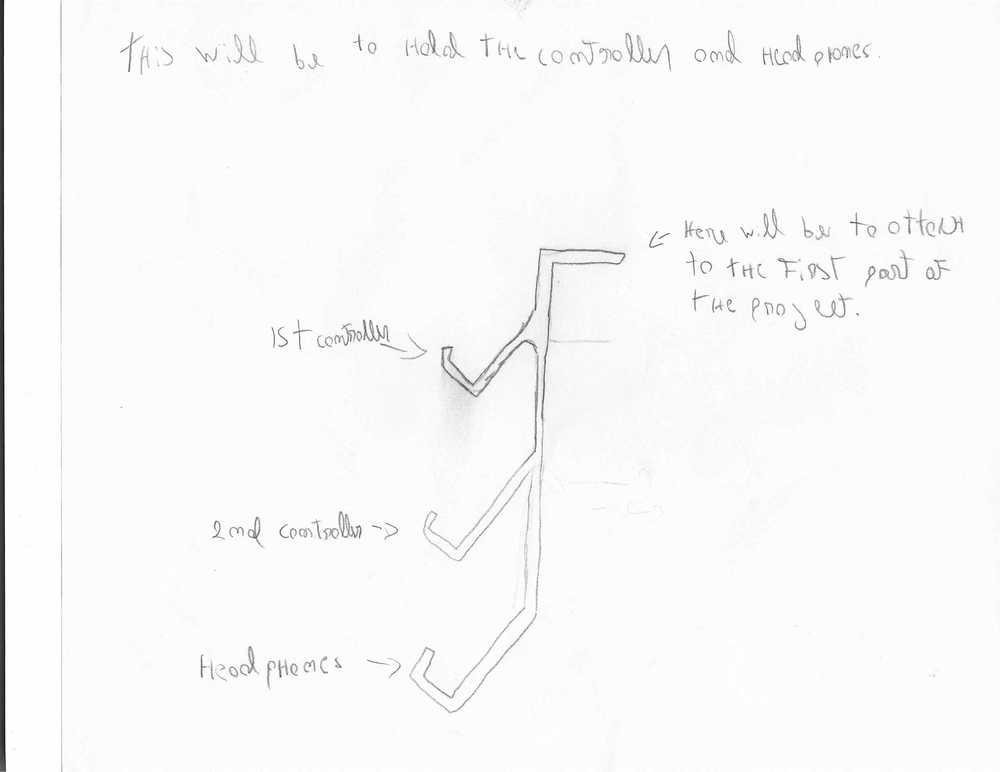
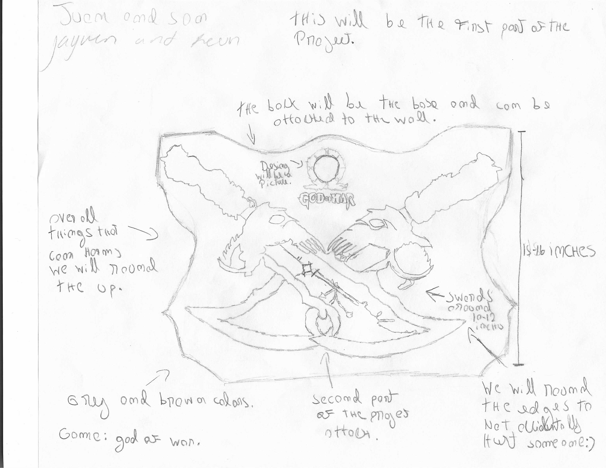

Before creating our final project, our team developed several sketches to help visualize different ideas and possible designs. These drawings allowed us to plan the structure, dimensions, and functionality of our project before building it.
Early Concept Sketches


These sketches represent our original ideas for the project. During the planning stage, we explored different ways to organize the design and determine where each component would be placed. The sketches helped us identify possible challenges before construction began.
Changes During Development
Although our final model is very similar to the original sketches, some modifications were necessary. We adjusted the dimensions, simplified a few design elements, and reduced the overall size of the project to make it more practical and suitable for its intended purpose.
The biggest change was the scale of the project. Our original design was larger and intended for a different use, but after testing and reviewing our materials, we decided that a smaller version would be more effective and easier to complete.
What We Learned
Creating sketches before building the project taught us the importance of planning and teamwork. We learned that design ideas often evolve during the development process and that flexibility is important when solving problems and improving a project.